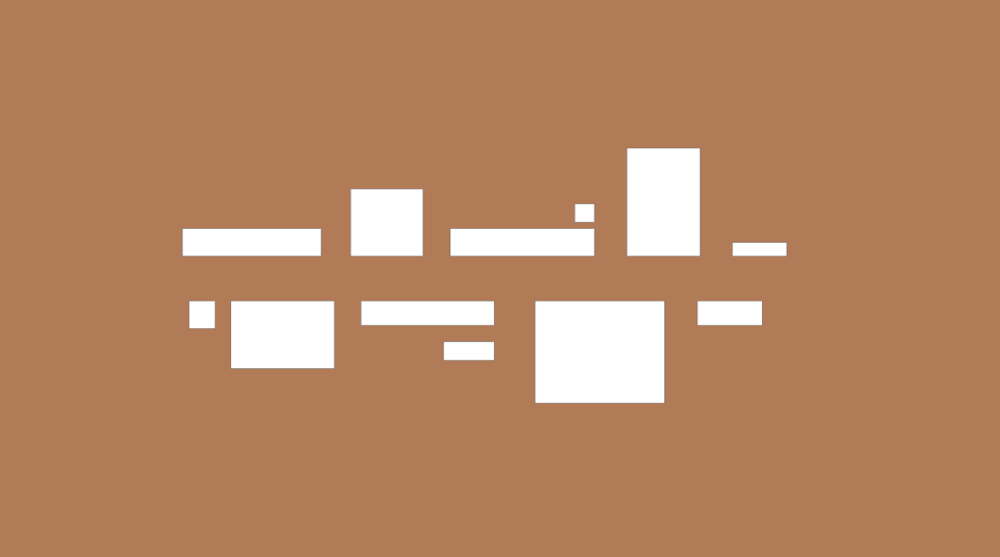

GESTALTLOVEN
Gestaltlovene beskriver, hvordan vi mennesker opfatter visuelle objekter i forhold til hinanden. Gestalt betyder ”form” på tysk. Når vi har at tale om interfacedesign, er gestaltlovene vigtigt at have kenskab til.
”Når mennesker ser på en kompleks kombination af visuelle elementer som et maleri eller et website, ser vi det hele, før vi ser det enkelte del, der udgør det hele”
Bradley,2010
LOVEN OM NÆRHED - PROXIMITY
Loven om nærhed handler om elementerne, der er placeret tæt på hinanden. Her ser vi to grupper, hvor delementerne i hver gruppe konnekterer med hinanden.

LOVEN OM LIGHED - SIMILARITY
Loven om lighed handler om elementer, der ser ens ud, bliver opfattet som relateret til hinanden. Selvom placeringer ikke er tæt på hinanden, opfatter vores hjerne de tre røde blokker som relateret til hinanden.
LOVEN OM KONTIUNUITET - GOOD CONTINUATION
Her elementerne placeret, så dannes en vandrettet linje. Hvis vi ser på det øverste elementer, kan vi se at de står på sammen linje som er usynlig og det gøre at vi opfatter dem relaterer til hinanden. Det samme gælder os for nederste elementer, de ser ud som om at de hænger på den linje som ikke usynlig.
LOVEN OM LUKKETHED - COMMON REGION
De elementer, der er lukket i den røde indramning, bliver opfattet som relateret til hinanden.
LOVEN OM FIGURDANNELSE - CLOUSE
Her, ser vi nogle elementer placeret, så der ligesom dannet en nye gruppe af et rektangel figur. Vores visuelle opfattelsesevne lukker automatisk hullerne, så vi ser en samlet figur.
VISUELT HIERARKI
Visuelt hierarki handler om de vigtigste information træder tydligt frem og samtidig de enkelte elementer skal understøtte deres funktion. Visuelt hierarki giver brugeren information om, hvor vigtigt et element er, og hvilken relation det har til andre elementer på siden.
Størrelse, farve, kontrast, justering, gentagelse, nærhed, luft og tekstur er faktorer, som påvirker vores opfattelse af visuelt hierarki på et website.
WIREFRAMING OG REDESIGN AF AIR INDIA
WEBSITE ANALYSE
- Er der et tydeligt visuelt hierarki på sitet?
- Bliver der gjort brug af kontrast? Hvordan?
- Er der balance/ubalance i det grafiske udtryk?
- Hvad gør websitet brugervenligt?
- Er det design over funktion?
- Er der gjort bevidst brug af designprincipper, og kan I identificere dem?
DÅRLIGE
http://www.petersbuss.se/
- Der er ikke noget tydelig visuelt hierarki på siden. Mange af sidens elementer varierer i størrelse og farve, og det kan være svært at finde et sted at fokusere på, og hvile øjnene.
- Teksten varierer også i farve, så man kan blive i tvivl om, hvilken tekst der beskriver hvad og hvilken tekst der er eksempelvis links
- Der bliver gjort brug af kontrast - dog ikke på en hensigtsmæssig måde. Man bliver ikke hjulpet til at fokusere på det rigtige.
- Der er ubalance i det grafiske udtryk, da både farver, størrelser på kasser, skrifttype og størrelser varierer. Et stort rod
https://blinkee.com/
- Hjemmesiden gør brug af animerede gif’er, som blinker. Mange af produktbillederne blinker. Det giver et meget rodet indtryk af siden. Man mister hele tiden fokus
- De enkelte produktbilleder er fritlagte på en hvid baggrund. De enkelte blokke med produkter har også en hvid baggrund og er ikke omkranset af en ramme. Derfor falder de i med den hvide baggrund. Det er rodet
- Knapperne er hvide med en sort ramme omkring på en hvid baggrund. Det gør layoutet for komplekst. Det var mere simpelt, hvis knappen havde en anden farve og ingen ramme.
GODE
http://www.mikiyakobayashi.com/projects
- Siden er bygget op af firkanter i samme størrelse - det giver symmetri. Det giver balance i designet.
- Kontrast: Sort tekst på hvis baggrund.
- Billederne er i centrum på denne hjemmeside. Det er først, når man fører musemarkøren hen over et billede at der kommer tekst frem. Billedeoversigten fylder hele fladen ud.
- Det er ikke design over funktion, da websiden fungerer helt som man forventer, selvom designet bibeholder sit meget simple design.
- En menu-funktion, som kan vises i højre side, gør det muligt at se emnerne i produktgrupper – meget overskueligt.
- Fantastisk flotte billeder!
- Man kan sige at hjemmesiden gør brug af loven om lighed, da alle billeder har samme form og størrelse.
https://www.virgin.com/
- Simpel men effektiv hjemmeside. Budskabet fremstår klart og tydeligt og uden konkurrerende eller forstyrrende elementer.
- Hjemmesiden gør brug af “rød” farven for at skabe en kontrast, hvilket fungerer rigtig godt. De “ vigtige “ elementer står tydeligt og klart.
- Der findes links der fungerer som “ troværdighedsforstærkere “ i form af links til eksterne samarbejdspartnere. (Eksterne referencer)
- Der er balance i designet, blandt andet fordi den røde farver går igen på hele siden.